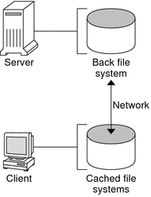

|
||||||||||||||||||||||
|
1. Managing Removable Media (Overview) 2. Managing Removable Media (Tasks) 3. Accessing Removable Media (Tasks) 4. Writing CDs and DVDs (Tasks) 5. Managing Devices (Overview/Tasks) 6. Dynamically Configuring Devices (Tasks) 7. Using USB Devices (Overview) 9. Using InfiniBand Devices (Overview/Tasks) 11. Administering Disks (Tasks) 12. SPARC: Adding a Disk (Tasks) 13. x86: Adding a Disk (Tasks) 14. Configuring Solaris iSCSI Targets and Initiators (Tasks) 15. Configuring and Managing the Solaris Internet Storage Name Service (iSNS) 16. The format Utility (Reference) 17. Managing File Systems (Overview) 18. Creating UFS, TMPFS, and LOFS File Systems (Tasks) 19. Mounting and Unmounting File Systems (Tasks) 20. Using The CacheFS File System (Tasks) High-Level View of Using the CacheFS File System (Task Map) Creating and Mounting a CacheFS File System (Task Map) How to Mount a CacheFS File System (mount) How to Mount a CacheFS File System (/etc/vfstab) How to Mount a CacheFS File System (AutoFS) Maintaining a CacheFS File System (Task Map) Maintaining a CacheFS File System How to Display Information About a CacheFS File System How to Specify Cache Consistency Checking on Demand How to Delete a CacheFS File System How to Check the Integrity of a CacheFS File System Packing a Cached File System (Task Map) How to Pack Files in the Cache How to Display Packed Files Information How to Pack Files in the Cache With a Packing List How to Unpack Files or Packing Lists From the Cache Collecting CacheFS Statistics (Task Map) How to Locate the CacheFS Log File How to View the Working Set (Cache) Size How to View CacheFS Statistics 21. Configuring Additional Swap Space (Tasks) 22. Checking UFS File System Consistency (Tasks) 23. UFS File System (Reference) 24. Backing Up and Restoring File Systems (Overview) 25. Backing Up Files and File Systems (Tasks) 26. Using UFS Snapshots (Tasks) 27. Restoring Files and File Systems (Tasks) 28. UFS Backup and Restore Commands (Reference) 29. Copying UFS Files and File Systems (Tasks) |
Overview of the CacheFS File SystemThe CacheFS file system is a general purpose caching mechanism that improves NFS server performance and scalability by reducing server and network load. Designed as a layered file system, the CacheFS file system provides the ability to cache one file system on another file system. In an NFS environment, the CacheFS file system increases the client per server ratio, reduces server and network loads, and improves performance for clients on slow links, such as Point-to-Point Protocol (PPP). How a CacheFS File System WorksYou create a CacheFS file system on a client system so that file systems you cache can be accessed by the client locally instead of across the network. The following figure shows the relationship of the components that are involved in using CacheFS file systems. Figure 20-1 How a CacheFS File System WorksThe back file system is the file system that you specify to be mounted in the cache. A back file system can be either NFS or HSFS (High Sierra File System). When the user attempts to access files that are part of the back file system, those files are placed in the cache. The front file system is the file system that is mounted in the cache and is accessed from the local mount point. The front file system type must be UFS. To the user, the initial request to access a file in a CacheFS file system might seem slow. However, subsequent uses of the same file are faster. CacheFS File System Structure and BehaviorEach cache has a set of parameters that determines the cache structure and how it behaves. The parameters are set to the default values listed in the following table. The default values specify that the entire front file system is used for caching, which is the recommended method of caching file systems. Table 20-1 CacheFS File System Parameters and Their Default Values
Typically, you should not change any of these parameter values. They are set to default values to achieve optimal cache behavior. However, you might want to modify the maxblocks and maxfiles values if you have some room in the front file system that is not used by the cache, and you want to use it for some other file system. You do so by using the cfsadmin command. For example: $ cfsadmin -o maxblocks=60 |
|||||||||||||||||||||
|